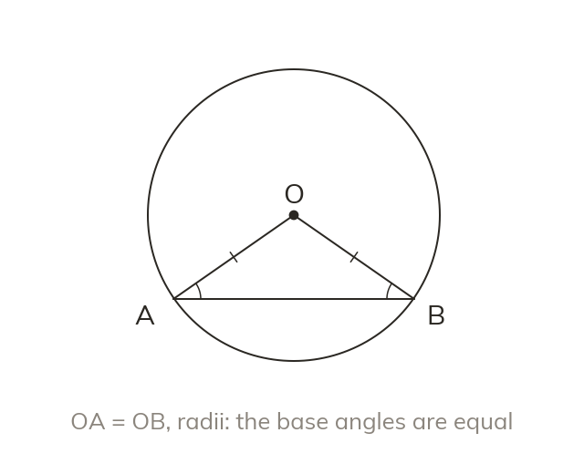

Two radii make it isosceles
Any two radii of one circle are equal. So a triangle with two radii as sides is isosceles. Its base angles are equal.
Any two radii of one circle are equal. So a triangle with two radii as sides is isosceles, and its base angles are equal.